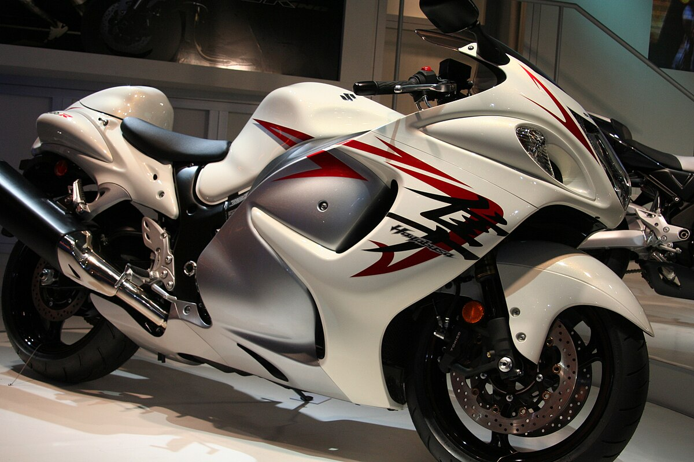

BMW S1000RR
De BMW S1000RR staat bekend om zijn precisie, technologie en balans. Het is een van de meest geliefde superbikes ter wereld.
Belangrijkste specs
- Motor: 999 cc, viercilinder
- Vermogen: ~205 pk
- Top snelheid: ongeveer 299 km/u
De S1000RR is populair bij zowel straatrijders als circuitrijders.

Kawasaki Ninja H2R
De Kawasaki H2R is een extreme superbike, uitgerust met een supercharger. Deze motor is enkel bedoeld voor het circuit.
Belangrijkste specs
- Motor: 998 cc, supercharged viercilinder
- Vermogen: 300+ pk
- Top snelheid: ruim boven 330 km/u
De H2R is een van de krachtigste motorfietsen die ooit is gemaakt.

Suzuki Hayabusa
De Suzuki Hayabusa was jarenlang de snelste productiemotor ter wereld en staat bekend om zijn stabiliteit op hoge snelheid.
Belangrijkste specs
- Motor: 1340 cc, viercilinder
- Vermogen: ~190 pk
- Top snelheid: ±300 km/u
De Hayabusa combineert kracht met comfort en is geliefd bij lange-afstand-rijders.
